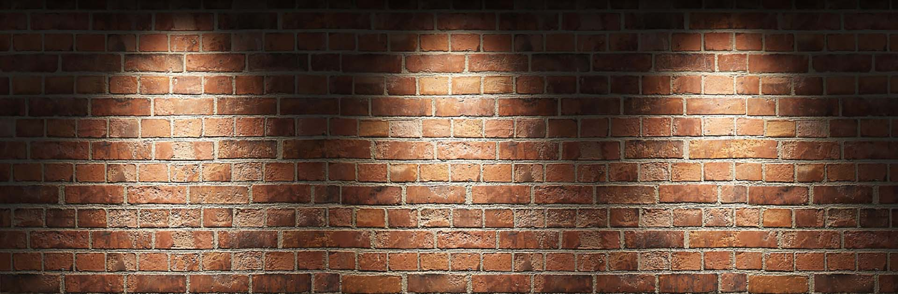

Подвал Разработчика
О! Привет! Ты ко мне? Располагайся. У меня
Неплохо так в подвале. Да вон, сядь на ту коробку. Что за
Портреты? Да, так мои кумиры. Лавкрафт, Кинг, Брэдбери, Лукьянеко, есть даже
Гоголь. Люблю его "Мёртвые Души". Отличное произведение. Как я написал сайт - да
На HTML. Я посмотрел ролик на Ютубе "HTML за 35 минут". Вот и научился. Не смейся, такой ролик
реально есть, хотя ситуация комичная. Но HTML я знаю плоховато, больше натырил
С Интернета. Да не в этом дело. Главное - сайт смешит и приносит определённую пользу.
Я рад, что тебе понравилось. Что в коробках - старые видео 2000х.
Меня тогда не было, а сейчас, в 2022 собираю, коллекционирую. Я вобще больше по старым
Играм. Ты в Wolfenstein 3d играл? Поиграй, игра классная. Да, похожа на Doom, согласен.
Там у меня Ramstein лежит. Очень люблю эту группу. Моя любимая - Amerika. Я вобще очень люблю
Германию, хоть и патриот своей страны. Про неофициальный гимн люфвафте слышал? Послушай, топовая компо-
зиция. Нет, не смотрел. Я вобще аниме мало смотрю, я КВ-шник, фанат Котов-Воителей. Тебе бежать уже надо? Ладно, пока, хорошего дня,
в четверг увидимся